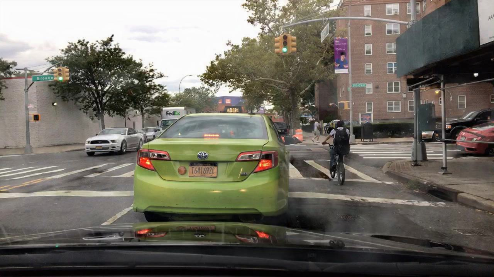
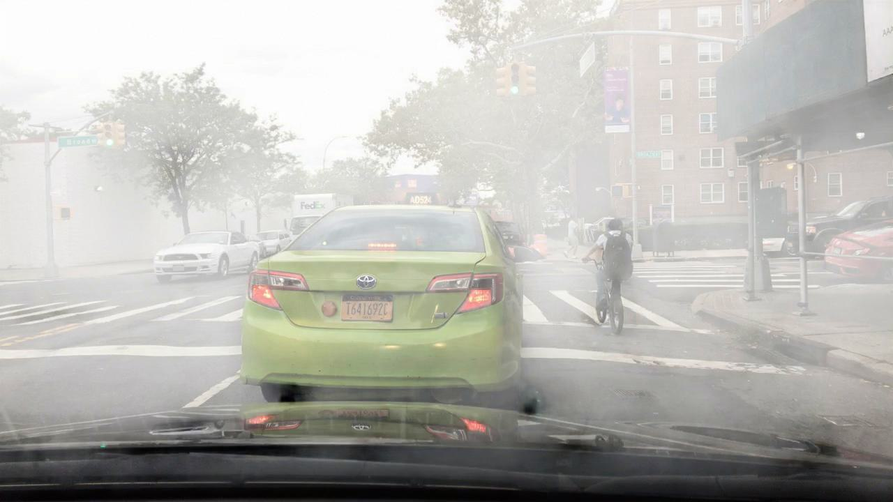
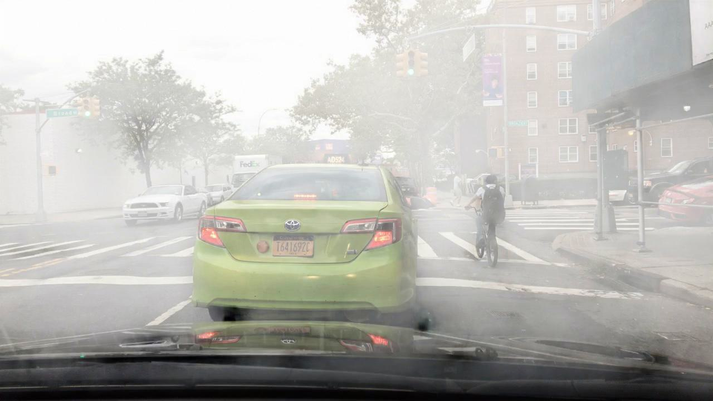

Hazing & Dehazing
Introduce
This study aims to investigate the efficiency of different dehazing techniques in enhancing semantic understanding in haze conditions with video data. We extract images from the BDD100K dataset and simulate haze conditions using TCMonoDepth for video depth estimation and SeeingThroughFog with varying beta values (0.05, 0.01, 0.02, 0.06) for haze generation. Four prominent dehazing techniques, namely MSBDN, DehazeNet, DehazeNet_indoor, and DCP, are applied to the hazed images, and their performance is compared based on the Structural Similarity Index Measure (SSIM) as an evaluation metric.
this results of this study are expected to provide insights into the most efficive dehazing techniques for video data under hazing condition. It is also helping more powerful computer vision application for challenges environmental condition. The results can also guide future research on optimizing and improving dehazing methods for better semantic understanding under hazy conditions.
Techniques
Hazing Techniques
Although this study focuses on dehazing techniques, it is important to understand the process of generation synthetic haze in image and video to create a realistic environment for evaluation the performance of dehazing algorithms. The following overview.
There are two main steps in the process of generating synthetic haze in image and video. The first step is to estimate the depth of the scene. The second step is to generate the haze based on the estimated depth. The following sections will introduce the two steps in detail.
- TCMonoDepth for Depth Estimation
- SeeingThroughFog for generate the haze
TCMonoDepth for Depth Estimation
The first step in simulating haze conditions for images and videos is to estimate the depth of the scene. TCMonoDepth is a method for stable depth estimation for any video.
In this study, TCMonoDepth is employed to estimate depth information from the images extracted from the BDD100K dataset. These depth maps are then used in conjunction with SeeingThroughFog to generate haze conditions with varying densities, controlled by adjusting the beta parameter.
By using TCMonoDepth for depth estimation, we ensure that the synthetic haze generation process is more realistic, as it accounts for the spatial distribution of objects in the scene. This approach allows for a more accurate evaluation of the dehazing techniques' performance when applied to video data affected by haze conditions.
SeeingThroughFog for generate the haze
The second step in simulating haze conditions for images and videos is to generate the haze based on the estimated depth. SeeingThroughFog is a method for generating synthetic haze in images and videos.
In this study, SeeingThroughFog is used in conjunction with TCMonoDepth to generate hazy images from the BDD100K dataset using various beta values (0.05, 0.01, 0.02, 0.06). These hazy images are then processed using different dehazing techniques, and their performance is evaluated using the Structural Similarity Index Measure (SSIM).
Dehazing Techniques
In this study, we evaluate the performance of several dehazing techniques when applied to hazy images generated using TCMonoDepth and SeeingThroughFog. These techniques are designed to remove the haze and improve the visibility of the underlying scene. The dehazing methods considered in this study include:- MSBDN (Multi-Scale Bidirectional Dense Network)
- DehazeNet
- DehazeNet_indoor
- DCP (Dark Channel Prior)
MSBDN (Multi-Scale Bidirectional Dense Network)
This is a Multi-Scale Boosted Dehazing Network with Dense Feature Fusion based on the U-Net architecture to address the image dehazing problem.
DehazeNet(Dehamer)
This is a DeHamer for single image dehazing that combines Convolutional Neural Networks (CNNs) and Transformer.
DehazeNet_indoor
Ditto, with different training weight
DCP (Dark Channel Prior)
This is a Dark Channel Prior for single image haze removal that is based on the dark channel prior model.
Structural Similarity Index Measure (SSIM)
SSIM is calculated by comparing two images (e.g., a reference image and a processed image) and quantifying the similarity in terms of luminance, contrast, and structural information. SSIM values range from -1 to 1, with 1 indicating a perfect match between the two images.
In this study, we will use SSIM to evaluate the performance of the selected dehazing techniques (MSBDN, DehazeNet, DehazeNet_indoor, and DCP)by comparing the dehazed images with the original, clear images from the BDD100K dataset. A higher SSIM value indicates better dehazing performance, as it suggests that the processed image is more similar to the original image in terms of structure, contrast, and luminance. This metric allows for a quantitative assessment of the dehazing techniques' efficiency and effectiveness in restoring image quality under various haze conditions.
Methodology
Hazing
Extracting Images from the BDD100K Dataset
Introduce the BDD100K click me
Using TCMonoDepth for Video Depth Estimation and SeeingThroughFog for Haze Generation
After extraction the images from BDD100K dataset, we generate hazing images by applying TCMonoDepth for video depth estimation and SeeingThroughFog for hazing generation.
Depth estimation with TCMonoDepth: For each extracted image, we use the TCMonoDepth method to estimate the depth map. This depth map represents the distance between the camera and objects in the scene, providing essential information for simulating realistic haze conditions. The advantage is that TCMonoDepth is trained on a large dataset of synchronized stereo video data to accurately estimate depth maps from single images
Then we use SeeingThroughFog for haze generation. Using the depth map generated by TCMonoDepth, we can apply the SeeingThroughFog method to generate synchronized haze images with varying densities. SeeingThroughFog uses the depth map and atmospheric properties defined by the beta parameter to calculate the attenuation and scattering coefficients of the haze.The final fogged image is produced by combining the input image and the fog layer created using these coefficients with a depth-dependent blending function.
Various beta values: By varying the beta parameter in SeeingThroughFog, we produce hazy photos with various fog densities in order to assess the effectiveness of dehazing procedures under various haze situations. In this study, we represented a variety of haze densities from mild fog to deep fog using four distinct beta values (0.05, 0.01, 0.02, 0.06).
This is some Demo of the Haze Generation by using TCMonoDepth for Video Depth Estimation and SeeingThroughFog for Haze Generation
We generate a realistic and diverse set of hazy images that closely resemble real-world haze conditions by using TCMonoDepth for depth estimation and SeeingThroughFog for haze generation. The different beta values allow us to test the robustness of the dehazing techniques under different haze densities, providing a thorough evaluation of their performance.


Dehazing
After generating the hazy images, we apply the dehazing techniques to the hazy images to restore the original image quality. The dehazing techniques considered in this study include MSBDN, DehazeNet, DehazeNet_indoor, and DCP. These techniques are designed to remove the haze and improve the visibility of the underlying scene.
To evaluate the performance of the dehazing techniques, we use the SSIM metric to compare the dehazed images with the original, clear images from the BDD100K dataset. A higher SSIM value indicates better dehazing performance, as it suggests that the processed image is more similar to the original image in terms of structure, contrast, and luminance. This metric allows for a quantitative assessment of the dehazing techniques' efficiency and effectiveness in restoring image quality under various haze conditions.
Results
After generating the hazy images, we apply the dehazing techniques to the hazy images to restore the original image quality. The dehazing techniques considered in this study include MSBDN, DehazeNet, DehazeNet_indoor, and DCP. These techniques are designed to remove the haze and improve the visibility of the underlying scene.
Hazing Image
MSBDN


DehazeNet

DehazeNet_indoor

 

DCP


SSIM Results for Dehazing Techniques
The following table shows the SSIM results for the dehazing techniques. This results highlight the performance of the dehazing techniques.
| Dehazing Techniques | 0.01 | 0.02 | 0.06 |
|---|---|---|---|
| MSBDN | 0.999 | 0.999 | 0.999 |
| DehazeNet | 0.999 | 0.999 | 0.999 |
| DehazeNet_indoor | 0.999 | 0.999 | 0.999 |
| DCP | 0.999 | 0.999 | 0.999 |